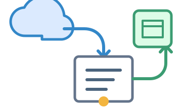
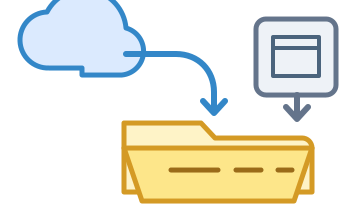

Windows
For Windows 10 and 11 on Intel or AMD 64-bit systems.
Home
Mountlet brings cloud storage accounts from different providers into one simple desktop app. Browse, open, sync, cache, and organize files without jumping between provider apps and web interfaces.
Download
Builds
Standard build: includes a current, app-local rclone. It is the recommended choice and does not replace a system installation.
Lean build: uses rclone already installed on the computer. It is intended for technical users and managed environments.
For Windows 10 and 11 on Intel or AMD 64-bit systems.
Choose the build matching the Mac processor.
Mounted folders require the official rclone binary; Homebrew rclone does not support mounting on macOS.
The current .deb package supports Debian, Ubuntu, Linux Mint, and compatible distributions on x86-64.
.rpm
Arch Linux package
openSUSE package
Mounted folders
Mountlet detects the driver and enables mounted folder access after installation.


Install macFUSE. Approve its system software in Privacy & Security and restart when macOS requests it.
Install macFUSE
Install FUSE 3 with the command for the distribution.
sudo apt install fuse3
Fedora / RHELsudo dnf install fuse3
Arch Linuxsudo pacman -S fuse3
Current beta installers are unsigned and may show an operating-system warning. See the before installing.
Pricing
Free during beta
Use the public beta key for temporary access. It renews daily while the beta is open and can be disabled when the beta ends.
$5/mo
Start with one device. Add more devices in the next box.
Start with a new one-device license, or add devices to a license you already have.
$1/device
Add optional extra device slots.
1 device total
$5
Mountlet starts with a 7-day trial, then unlocks with one online activation. Lifetime licenses keep working offline; subscriptions work offline until the current paid period ends. The license key is your support identity; keep it somewhere safe. Subscription prices may change for future renewals with advance notice.
License
Save this key now. Mountlet does not keep customer records, so lost keys cannot be recovered.
Features
Mountlet keeps accounts from different providers together, with two complementary ways to work: a fully managed file browser and native mounting.
Two complete workflows
Use either workflow for each remote and switch between them at any time.

Browse, open, upload, copy, move, rename, and delete through one interface across every remote.

Mount any remote as an ordinary folder for Finder, Explorer, Dolphin, command-line tools, and other desktop software.
Transfer files within an account or between providers, drag files in from the desktop, and queue offline downloads directly from the integrated browser.
Temporary cache and protected offline copies are tracked separately. Clear resolved cache globally or per item without removing files explicitly kept offline.
See reachability, mount state, storage usage where providers expose it, and direct links to provider web interfaces from the remote list.
Navigate remotes, search results, folders, and file actions with configurable shortcuts designed for quick repeated use.
Supported providers
 Google DriveLocally tested
Google DriveLocally tested DropboxLocally tested
DropboxLocally tested BoxLocally tested
BoxLocally tested Cloudflare R2Locally tested
Cloudflare R2Locally tested NextcloudGuided setup
NextcloudGuided setup S3-compatibleAWS, MinIO, Wasabi, and more
S3-compatibleAWS, MinIO, Wasabi, and moreOther rclone backends remain available through the terminal setup fallback. Provider capabilities and quota reporting vary.
Supported platforms
Windows 10 and 11, with Explorer mounting through WinFsp.
Apple silicon and Intel Macs, with Finder mounting through macFUSE.
Current packages target Debian, Ubuntu, Linux Mint, and compatible x86-64 systems. Fedora, RHEL-compatible, Arch Linux, and openSUSE packages are under development.
How it works
Mountlet coordinates rclone rather than reimplementing each provider protocol. The same configured cloud account can be managed through Mountlet’s file browser or exposed to the operating system as a mounted folder.
Each account is stored as an rclone remote with its provider settings and authentication data.
Mountlet runs rclone in the background and adds indexing, cache management, search, status, and desktop controls.
Integrated browser
Folder listings, downloads, uploads, copies, moves, and deletions are performed by background rclone commands. Files opened from Mountlet use its managed local cache, even when the same remote is mounted. Mountlet can therefore detect local edits, compare the cloud state, upload safe changes, and ask before resolving a conflict.
Mounted filesystem
Mountlet starts rclone mount, which exposes the remote through FUSE on Linux, macFUSE on macOS, or WinFsp on Windows. Finder, Explorer, Dolphin, terminals, and other applications then interact with the remote through ordinary filesystem operations. Those direct edits bypass Mountlet’s cache and conflict resolver.
Technical details
rclone stores each remote in rclone.conf. Mountlet uses that same configuration for browser operations and mounted folders, and provides guided setup for common backends.
Mountlet builds a local SQLite metadata index from recursive rclone listings. Search and initial navigation use the index; current folders are refreshed against the remote in the background.
Files opened through Mountlet are copied into its managed local store. Temporary cache can be cleared, while protected offline files remain available and participate in change detection.
Network operations and mounts run in background rclone processes so the interface remains responsive. Mountlet records rclone output and reports connection or mount failures without blocking unrelated remotes.
Notifications
Loading notifications...
FAQ
For many daily file tasks, yes. Provider apps may still be better for provider-specific sharing, collaboration, or backup features.
A platform filesystem driver provides mounted folder access. Mountlet file management runs independently through the integrated browser, and both workflows can be used together.
.
Files opened from Mountlet still use its managed cache and conflict checks. Files opened from the mounted folder in Finder, Explorer, Dolphin, terminals, or other apps use the live rclone mount directly and bypass Mountlet's conflict resolver. Close those files before unmounting.
It is the cloud access engine Mountlet uses behind the scenes for provider access, file operations, and mounted folders.
The source is available for non-commercial use. Commercial use or redistribution requires separate permission.
No. Paid builds use a 7-day trial and online activation. Lifetime licenses keep working offline. Subscriptions store a signed local license through the current paid period.
Yes. Price changes apply only to future renewals, with notice before renewal. You can cancel before the new price applies.
Current beta builds are not code-signed or Apple-notarized. Only install Mountlet from this site or Mountlet's GitHub release/build artifacts.
Do not disable SmartScreen, Gatekeeper, or other system protection globally.
Search this FAQ first. If it does not answer your question, send a support request. Mountlet is independently maintained, so replies may take time.
Support
Most common questions are answered there. Mountlet is independently maintained, so individual replies may take time.